Building a robot to test our algorithm
July 13, 2025
My former colleague, Petr Karnakov, and I have developped a novel method for path planning of objects when the dynamics of a system are known. The method is presented in details in our 2025 publication in Physical Review Letters (also available on arxiv). The method looked promiosing, as it beats reinforcement learning in several benchmarks, but we had tested this only in simulations (we are computational scientists after all).
One day our PI suggested that we try it in a physical setting, and pointed out that there was a robotics challenge in Boston, about two months later, organized by MassRobotics, called form and function challenge. We decided to participate and build a robot, the Hydrocube.
The Hydrocube is a device that transports small objects suspended in a liquid towards prescribed targets in three dimensions. The transport is realized by creating a flow in the chamber with the help of 5 rotating disks. The method we developped learns, in simulations, how to choose the rotation speed of the disks given the current position of the beads and their targets.
Therefore, the device required the following components:
- a cubic chamber filled with a liquid;
- 5 rotating disks, at the bottom and sides of the chamber;
- 5 motots to independently control each disk;
- cameras, placed at the top of the chamber, to estimate the current position of beads;
- a device to control the disks, and electronics between this device and the motots;
- the cameras and the device were connected to a laptop, which hosts the control algorithm.
Here I want to share some snapshots of what happened during the building process of the Hydrocube.
The chamber and rotating disks
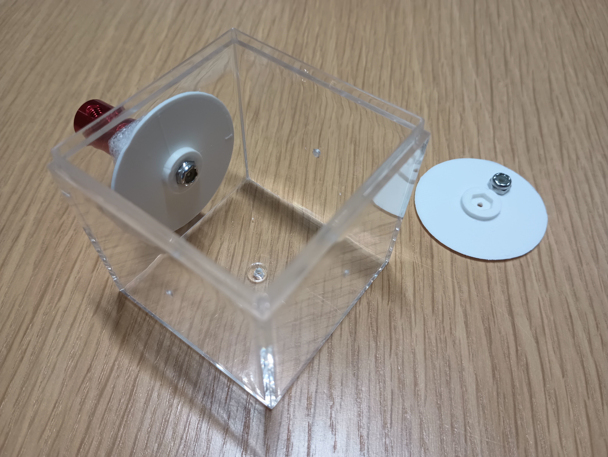
The chamber and the rotating disks are the central element of this robot. The main challenge was to have thin disks that were inside the chamber, but able to rotate reliably with no leaks. Due to the highly viscous liquid (glycerol) inside the chamber, rotating the disks requires a large torque. On the left was the first design: each disk is 3D-printed and linked via a thin rod to a shaft coupler that attached directly to the motors. The first tests were rather unsuccessful: too much wobbling (due to the thin, flexible rods that were not well aligned with the motors), a bit of leaking, and sometimes the disks would stop rotating due to the thin rods slipping from the disks or from the shaft couplers. We thus updated the design to account for these problems. The solution was to have a more flexible connection, as shown below.
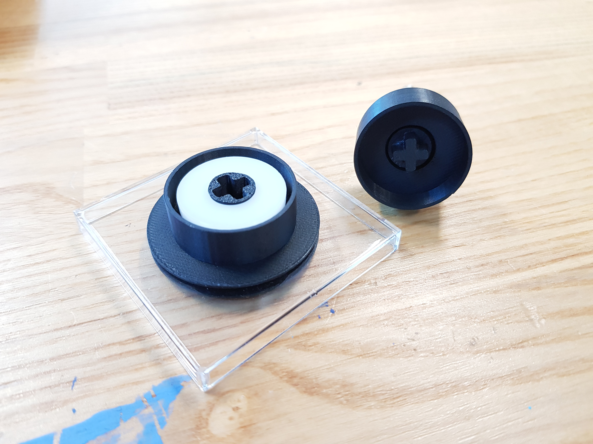
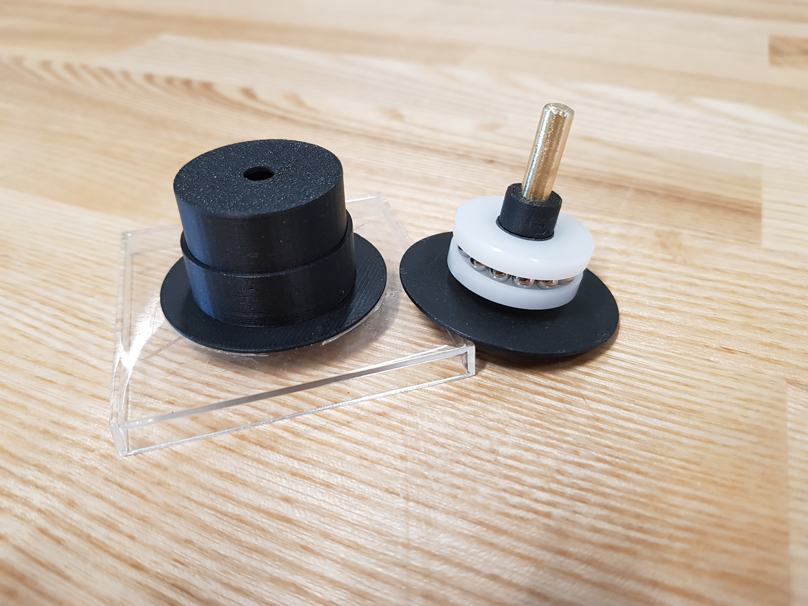
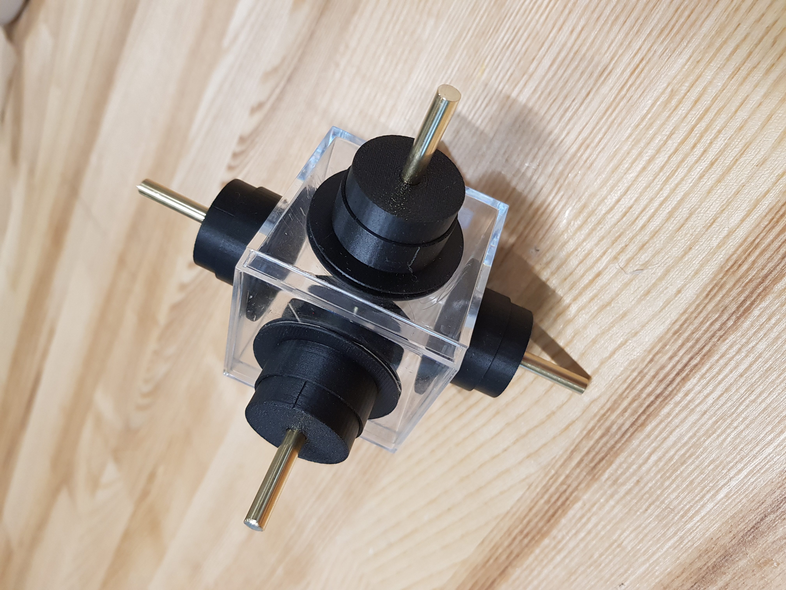
This new design uses ball bearings to ease the rotation of the disks, and a cross shaped connection that allows a more flexible connection with the shaft coupled to the motors. Furthemore, the frame responsible to hold the motors, initially built from a plastic box, resulted in bad alignment of the motors. Below are pictures of this first frame:
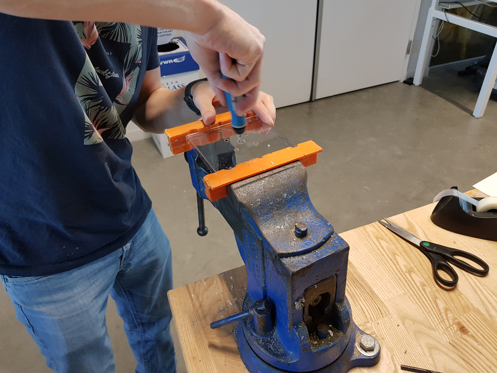
The first design of the frame was a drilled plastic box.
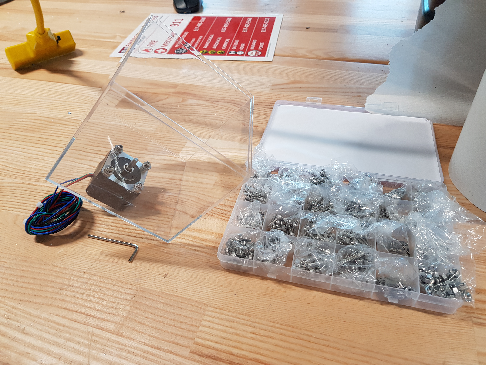
Motors were directly screwed on the box.
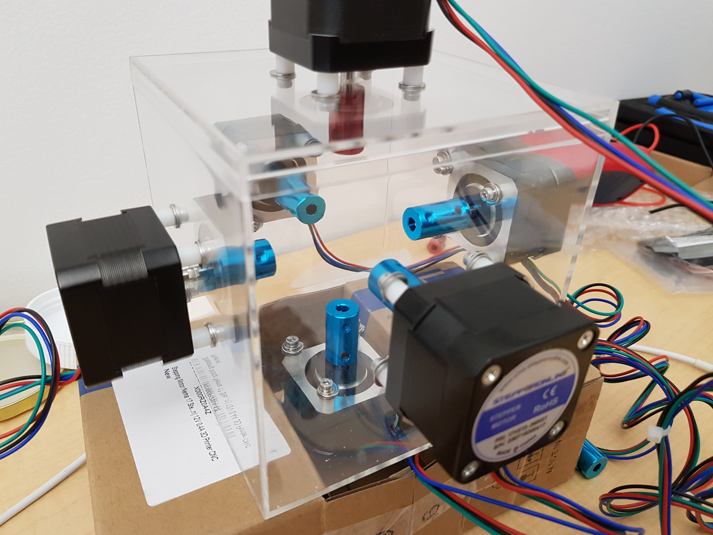
The motor shafts were then extended with shaft couplers to reach the chamber.
We decided to redesign the frame to make it more robust, provide a better alignment, and more space to access the chamber. Below are the results:
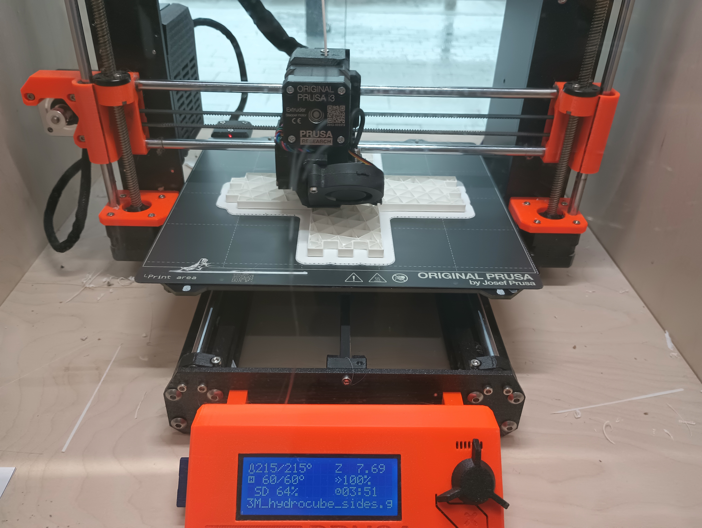
One of the six parts of the 3D-printed frames.
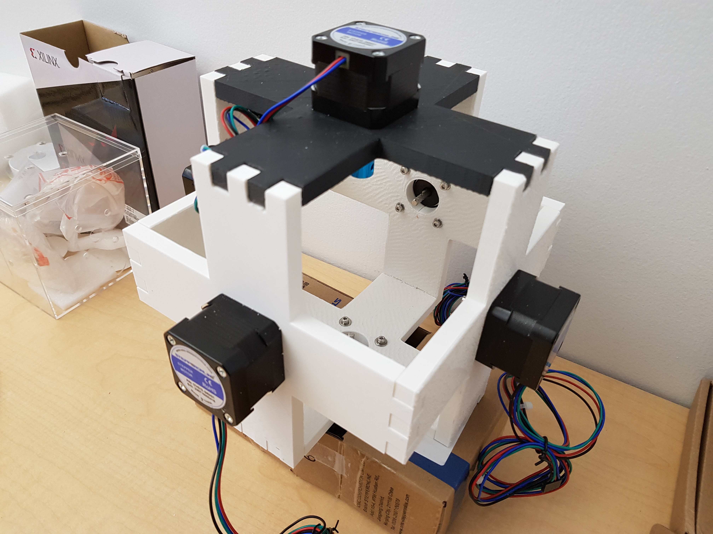
The new design is more robust and gives a better access to the chamber.
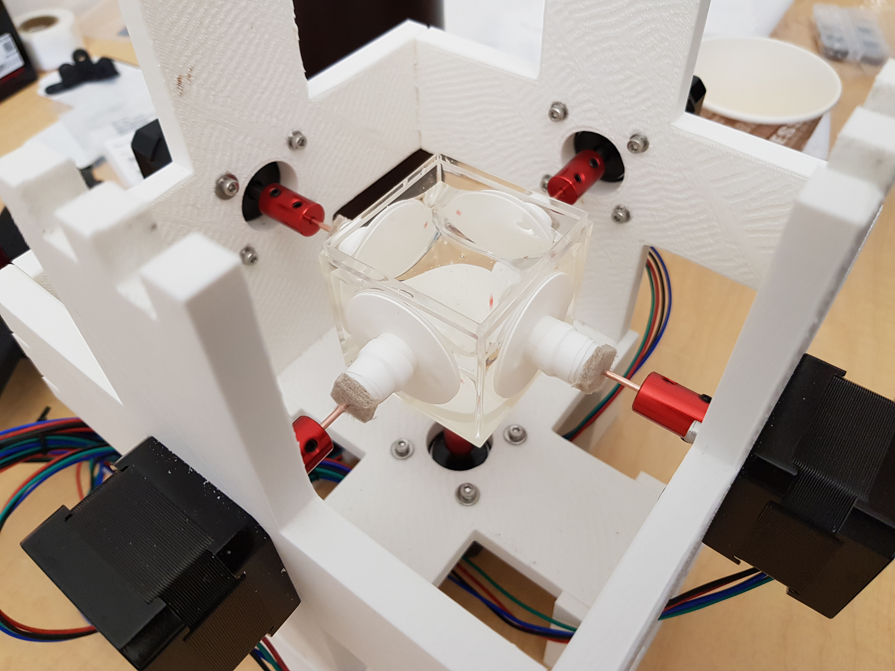
The six parts of the frame are modular and can be removed if needed.
Note that these are the largest pieces we had to print for this device, and also the first 3D-printed pieces we ever made. These were all designed with SolidWorks, with a license provided by Dassault Systemes.
Electronics
Another challenge was to connect the Kria board, to the motors, as none of us had much experience with electronics. We ordered bread boards to experiment and ended up keeping those in the final design due to the time constraints.

First stepper motor test. Kria to A4988 chip to stepper motor, with an external power source.
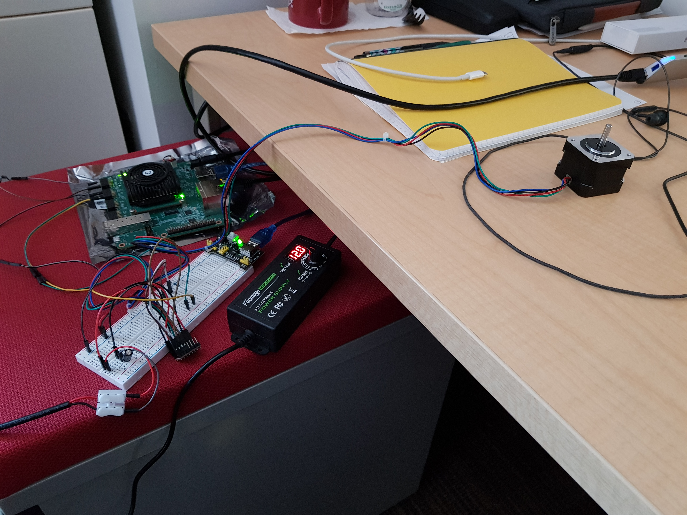
Incremental changes: using the breadboard to power the motor.